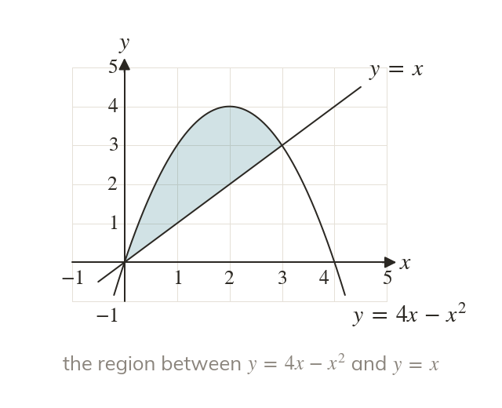
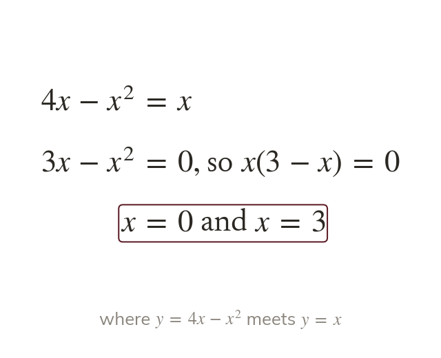
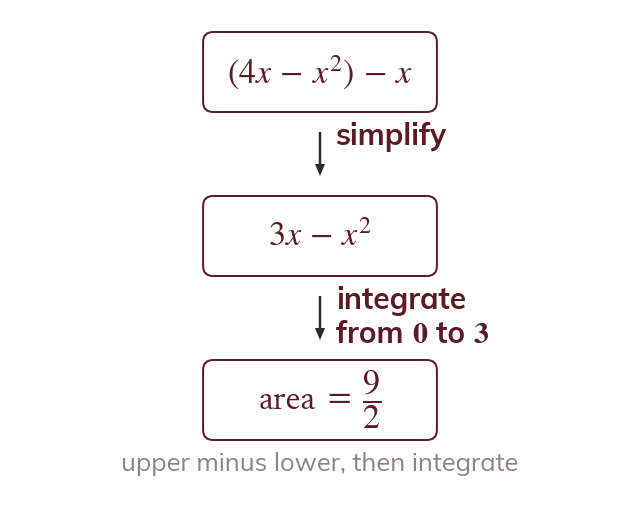
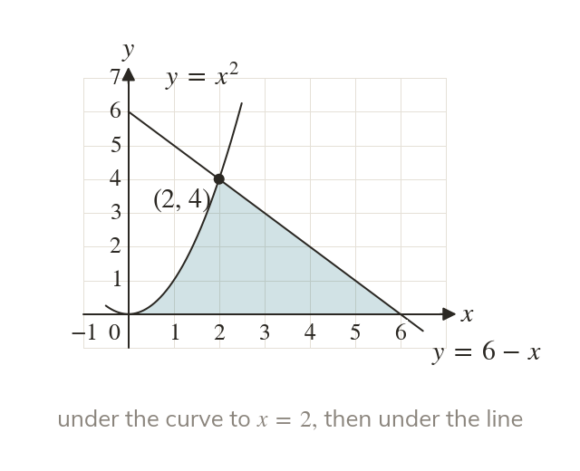
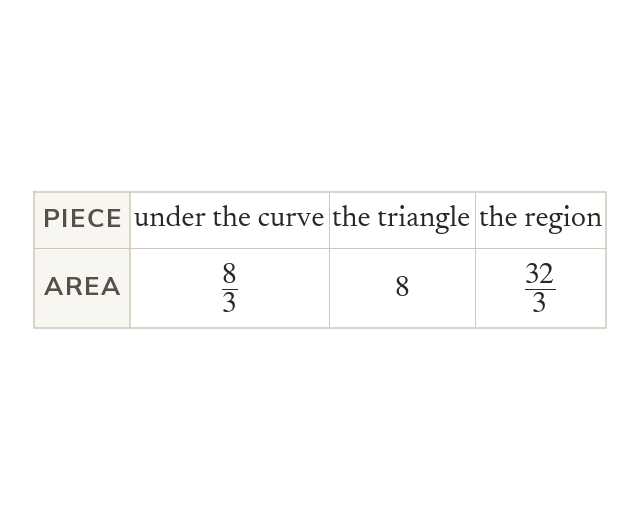
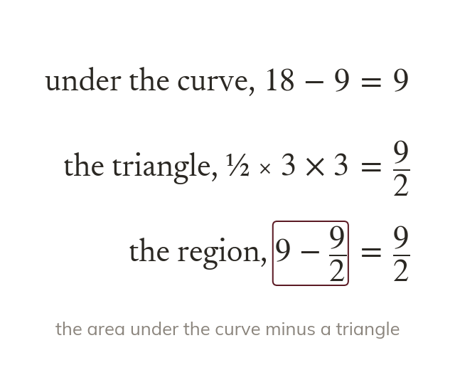

Upper minus lower
The area between two graphs from = a to is the area under the upper one minus the area under the lower one. As one integral it is ∫ₐᵇ (upper − lower) dx.
The area between two graphs is the area under the upper one minus the area under the lower one. It ends the chapter by joining the intersections of chapter to the definite integrals of
Work down the page at your own pace. Write every answer in your book first, then click to check it.
Read each card, then follow the worked examples one step at a time.

The area between two graphs from = a to is the area under the upper one minus the area under the lower one. As one integral it is ∫ₐᵇ (upper − lower) dx.

The limits are the x-coordinates of the points where the graphs meet. Solving gives and

The area is
A bracket round each graph keeps every sign right.
Pick an answer. If it's wrong, the feedback tells you which mistake it was.
Write the blanks in your book first, then tap each one to check.
Read each card, then follow the worked examples one step at a time.

A region bounded by a curve, a line and an axis is often an area under the curve with a triangle or trapezium added or taken away. A sketch shows which.

Under from to the area is
Under the line from to is a triangle of base and height area so the region has area

The region between and is the area under the curve from to which is minus the triangle under the line, ½ ×
This gives as before.
Pick an answer. If it's wrong, the feedback tells you which mistake it was.
Write the blanks in your book first, then tap each one to check.
Finished? Next lesson: 14.1 Exponential Functions and y = eˣ.
For each skill, tap the one that is true for you today. Your Revise pages start with anything you mark Not yet.
Your ratings are saved on this device only.
Log in, then search for a code to practise that skill.